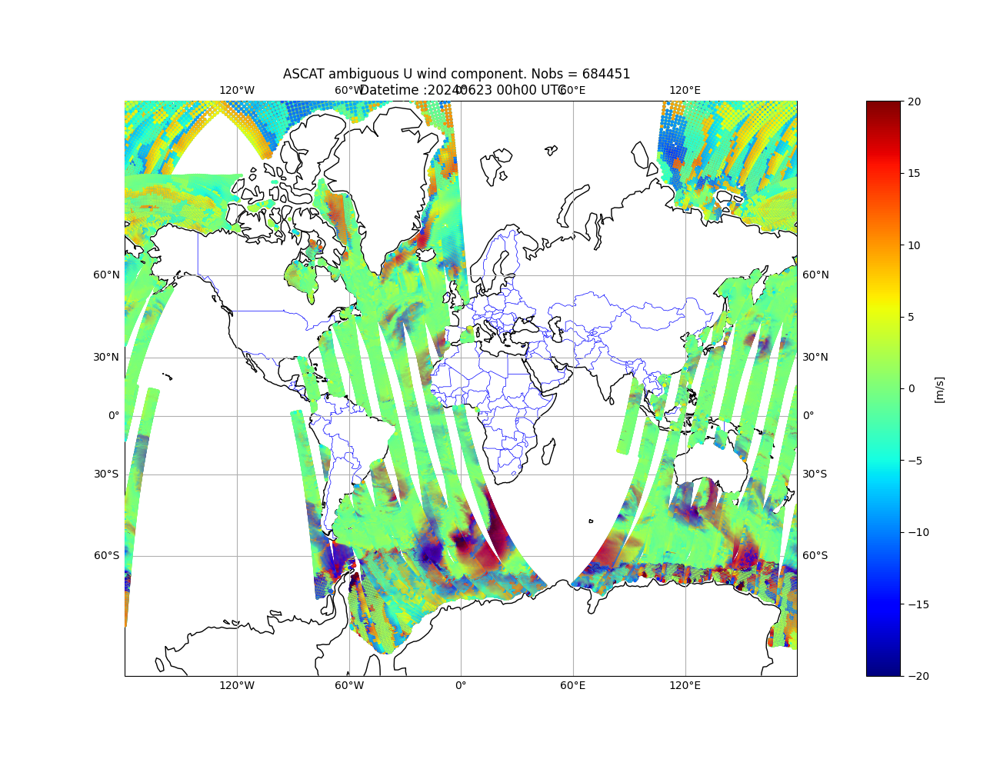

ODB data conversion
At present, odb4py provides two functions to convert ODB datasets into alternative formats, in addition to direct querying capabilities.
These conversion tools are implemented in the odb4py.convert module.
The following conversion workflows are currently supported:
Conersion from :
ODB to ODB2
ODB to NetCDF
ODB to SQLite
Note
It is important to note that conversion to the ODB2 format is not handled internally by odb4py. Instead, users can pass the extracted data to the encoder available in the pyodc package.
Because data conversion inherently entails both read and write operations, an ODB dataset generated by the global model ARPEGE is used as a benchmark. This provides a representative framework for evaluating the input/output performance of the odb4py.convert module.
Conversion to ODB2
The example below extracts the ASCAT ambiguous v and u component of wind from an ECMA ODB (varno==124 , varno==125) and writes the rows into an ODB2 file.
#-*- coding : utf-8 -*-
from datetime import datetime
from odb4py.core import odb_open , odb_dca , odb_close
from pyodc import codc
# Start
start = datetime.now()
# ODB path
dbpath ="/path/to/ECMA.ascat"
# Get some needed attributes
db = OdbObject ( dbpath )
db_attr = db.get_attrib()
db_date = db_attr["observation_date"] # Observation datetime
dt = db_date.split()[0] # Date
tm = db_date.split()[1] # Time
# ODB2 output filename
odb2file="arpege_ascat_"+dt+"_"+tm+".odb2"
# Set up the sql query : Get the ambigous U wind component (obstype =9, codetype=139, varno=124)
sql_query="select statid , \
degrees(lat) ,\
degrees(lon) ,\
varno ,\
obstype ,\
codetype ,\
date ,\
time ,\
obsvalue ,\
vertco_reference_1,\
vertco_reference_2,\
datum_status.active@body , \
datum_status.blacklisted@body, \
datum_status.passive@body, \
datum_status.rejected@body,\
FROM hdr,body WHERE obstype==9 AND codetype==139 AND varno ==124 ORDER BY date,time"
#Parse the query
p =SqlParser()
nf =p.get_nfunc ( sql_query )
sql=p.clean_string ( sql_query )
# Create a connection object
conn = odb_open( dbpath )
# Fetch the rows as a dictionary
rows = conn.odb_dict ( database = dbpath ,
sql_query= sql ,
nfunc = nf ,
fmt_float= 10 ,
queryfile= None ,
poolmask = None ,
pbar = True )
# Build the dataframe
df = pd.dataFrame( rows )
# Encode into the ODB2 file
encode_odb(df, odb2file , rows_per_frame= 1000 )
# Close the odb
conn.odb_close()
# End
end = datetime.now()
total_duration = end - start
print("Runtime duration:" , duration )
Output
[##################################################] Complete 100% (Total: 684451 rows)
--odb4py : ODB database closed.
Runtime duration: 0:00:12.325594
Check the output ODB2 file
The output ODB2 file can be checked using the ECMWF odc tool and visualied with metview or Python directly.
odc count ascat_arpege_20240623_000000.odb2
684451
odc sql -i ascat_arpege_20240623_000000.odb2 'select * WHERE rownumber() < 10'
obstype@hdr date@hdr datum_status.passive@body codetype@hdr time@hdr datum_status.blacklisted@body statid@hdr datum_status.active@body datum_status.rejected@body degrees(lat) degrees(lon) obsvalue@body varno@body
9 20240622 0 139 210000 0 ' 005' 1 0 15.649060 -173.493550 -8.012632 125
9 20240622 0 139 210000 0 ' 005' 1 0 15.649060 -173.493550 -2.087134 124
9 20240622 0 139 210000 0 ' 005' 1 0 15.649060 -173.493550 7.754457 125
9 20240622 0 139 210000 0 ' 005' 1 0 15.649060 -173.493550 1.283742 124
9 20240622 0 139 210000 0 ' 005' 0 1 15.695730 -173.721710 -7.765099 125
9 20240622 0 139 210000 0 ' 005' 0 1 15.695730 -173.721710 -2.197302 124
9 20240622 0 139 210000 0 ' 005' 0 1 15.695730 -173.721710 7.429603 125
9 20240622 0 139 210000 0 ' 005' 0 1 15.695730 -173.721710 1.552125 124
9 20240622 0 139 210000 0 ' 005' 0 1 15.742160 -173.949980 -7.635057 125
{kind=link}

Example : ASCAT satellite from an ARPEGE ECMA ODB converted to ODB2.
Convert ODB to Sqlite database
To perform such a conversion, the odb_to_sqlite has to be used. The data encoding is handled in the backend, ensuring compatibility with the ODB internal format. SQLite tables are automatically created by mapping the data types returned by the ODB query to the corresponding types supported by SQLite.
#-*- coding : utf-8 -*-
from datetime import datetime
# Convert module
from odb4py.convert import odb_to_sqlite
# Start
start = datetime.now()
# ODB path
dbpath ="/path/to/ECMA.ascat"
# Set up the sql query : Get the ambigous U wind component (obstype =9, codetype=139, varno=124)
sql_query="select statid , \
degrees(lat) ,\
degrees(lon) ,\
varno ,\
obstype ,\
codetype ,\
date ,\
time ,\
obsvalue ,\
vertco_reference_1,\
vertco_reference_2,\
datum_status.active@body , \
datum_status.blacklisted@body, \
datum_status.passive@body, \
datum_status.rejected@body,\
FROM hdr,body WHERE obstype==9 AND codetype==139 AND varno ==124 ORDER BY date,time"
# Same as the previous example
# ...
# ODB2 output filename
odb2file="arpege_ascat_"+dt+"_"+tm+".sqlite"
# Call odb2sqlite method
status =odb_to_sqlite (database=dbpath,
sql_query = sql_query,
sqlite_db = outfile ,
nfunc = nf ,
pbar = True ,
verbose = True )
# End
end = datetime.now()
duration = end - start
print("Runtime duration:" , duration )
Runtime duration: 0:00:01.988741
To inspect the SQLite database integrity and the extracted data ingestion, the sqlite3 command-line utility has to be used. The following sqlite commands :
Open the sqlite output database and see whether the datatypes have been correctly mapped from ODB1 to SQLite.
Fetch the first 10 rows from all available columns.
sqlite3 arpege_ascat_2024062300.sqlite
sqlite>.fullschema
CREATE TABLE IF NOT EXISTS "ASCAT" (statid_hdr INTEGER, degrees_lat INTEGER, degrees_lon INTEGER, varno_body TEXT, obstype_hdr TEXT, codetype_hdr TEXT, date_hdr TEXT, time_hdr TEXT, obsvalue_body INTEGER, vertco_reference_1_body INTEGER, vertco_reference_2_body INTEGER, datum_status_active_body TEXT, datum_status_blacklisted_body TEXT, datum_status_passive_body TEXT, datum_status_rejected_body TEXT);
sqlite>.tables
ASCAT
sqlite> select * FROM ASCAT WHERE degrees_lat BETWEEN 34 AND 60 AND degrees_lon between -5 AND 15 LIMIT 10;
3|37.3063|5.2333|124|9|139|20240622|210937|0.0320263852790326|101754.512366896||0|0|0|1
3|37.3063|5.2333|124|9|139|20240622|210937|-0.0923374476412209|101754.512366896||0|0|0|1
3|37.34035|5.51212|124|9|139|20240622|210937|0.542813296700668|101786.251421662||0|0|0|1
3|37.34035|5.51212|124|9|139|20240622|210937|-0.493466633364241|101786.251421662||0|0|0|1
3|37.37374|5.79119|124|9|139|20240622|210937|0.667882580297611|101793.058252627||0|0|0|1
3|37.37374|5.79119|124|9|139|20240622|210937|-0.583875525852227|101793.058252627||0|0|0|1
3|37.06644|1.85671|124|9|139|20240622|210941|-0.905055759851888|101702.331313069||0|0|0|1
3|37.06644|1.85671|124|9|139|20240622|210941|0.707447059008582|101702.331313069||0|0|0|1
3|37.18992|2.6865|124|9|139|20240622|210941|-0.507586435107384|101760.207672596||0|0|0|1
3|37.18992|2.6865|124|9|139|20240622|210941|0.517408241576685|101760.207672596||0|0|0|1
Note
By default, the odb_to_sqlite method generates a table called ODB.
To support more dynamic workflows, the table name can be given as an argument.
This flexibility allows users to consolidate results from multiple ODB queries into separate SQLite tables within a single output file.
Multiple tables in one sqlite file
Create multiple SQLite tables according to ODB obstype column. The same MetCOop CCMA is used ( date/time : 20240104 at 00h00 UTC ).
#-*- coding : utf-8 -*-
from datetime import datetime
# Import
from odb4py.convert import odb_to_sqlite
# Path to ODB
dbpath="/path/to/CCMA" # or ECMA.<obstype>
# Start
start = datetime.now()
# Parser object
p =SqlParser()
# The sql query
query="select statid ,\
degrees(lat) ,\
degrees(lon) ,\
varno ,\
date ,\
time ,\
fg_depar ,\
an_depar ,\
obsvalue ,\
FROM hdr,body "
# Declare the obstyses to be extracted
# 1 --> synop
# 2 --> AMDAR
# 5 --> TEMP
# 13 --> Radar
obstype_list=[ "1","2", "5", "13"]
# The output SQLite file
sqlite_output="ccma_obstypes_2024010400.sqlite"
for obst in obstype_list :
"""
THE PATH TO THE ODB IS THE SAME FOR EVERY OTERATION.
WE DON'T NEED TO UPDATE THE VARIABLES RELATIVE TO THE PATH
INSIDE THE LOOP :
IOASSIGN
ODB_SRCPATH_CCMA
ODB_DATAPATH_CCMA
"""
# SQLite table names
table_name = "obstype_"+obst
# Change the SQL query according to obstype value ( Add WHERE condition )
query_by_obstype = sql_query + " WHERE obstype ==" +obst.rstrip()
# Parsing the query must be updated, since the query is changing for every iteration
nf =p.get_nfunc ( query_by_obstype )
sql =p.clean_string ( query_by_obstype )
# Convert
re =odb_to_sqlite(database =dbpath,
sql_query = sql ,
nfunc = nf ,
sqlite_db = sqlite_output ,
table_name= table_name ,
pbar = True ,
verbose = True )
# Check if it failed
if re != 0 :
print( "Failed to convert data. ODB :" , dbpath )
continue
# End
end = datetime.now()
duration = end - start
print("Runtime duration:" , duration )
******** New ODB I/O opened with the following environment
******* ODB_CONSIDER_TABLES=*
ODB_IO_KEEP_INCORE=1
ODB_IO_FILESIZE=32 MB
ODB_IO_BUFSIZE=4194304 bytes
ODB_IO_GRPSIZE=1 (or max no. of pools)
ODB_IO_PROFILE=0
ODB_IO_VERBOSE=0
ODB_IO_METHOD=5
ODB_CONSIDER_TABLES=*
ODB_WRITE_TABLES=*
--odb4py : Executing query from string:
'select statid ,degrees(lat),degrees(lon),varno ,date , time,fg_depar, an_depar, obsvalue,FROM hdr,body WHERE obstype ==1'
--odb4py : Number of requested columns : 9
[##################################################] Complete 100% (Total: 3898 rows)
--odb4py : Rows have been successfully written into the SQLITE db : output.sqlite
--odb4py : Total written data size : 215338 Bytes
--odb4py : Executing query from string:
'select statid ,degrees(lat),degrees(lon),varno ,date , time,fg_depar, an_depar, obsvalue,FROM hdr,body WHERE obstype ==2'
--odb4py : Number of requested columns : 9
[##################################################] Complete 100% (Total: 51 rows)
--odb4py : Rows have been successfully written into the SQLITE db : output.sqlite
--odb4py : Total written data size : 3111 Bytes
--odb4py : Executing query from string:
'select statid ,degrees(lat),degrees(lon),varno ,date , time,fg_depar, an_depar, obsvalue,FROM hdr,body WHERE obstype ==5'
--odb4py : Number of requested columns : 9
[##################################################] Complete 100% (Total: 15991 rows)
--odb4py : Rows have been successfully written into the SQLITE db : output.sqlite
--odb4py : Total written data size : 962611 Bytes
--odb4py : Executing query from string:
'select statid ,degrees(lat),degrees(lon),varno ,date , time,fg_depar, an_depar, obsvalue,FROM hdr,body WHERE obstype ==13'
--odb4py : Number of requested columns : 9
[##################################################] Complete 100% (Total: 34818 rows)
--odb4py : Rows have been successfully written into the SQLITE db : output.sqlite
--odb4py : Total written data size : 2010698 Bytes
Runtime duration: 0:00:05.994993
A tables is created for each obtype inside the same SQLite file.
sqlite3 ccma_obstypes.sqlite
SQLite version 3.26.0 2018-12-01 12:34:55
Enter ".help" for usage hints.
sqlite> .tables
odb_obstype_1 odb_obstype_13 odb_obstype_2 odb_obstype_5
sqlite>
Convert ODB to NetCDF format
In addition to SQLite, odb4py supports the conversion of ODB data to NetCDF format using the odb_to_nc function.
As with the odb_to_sqlite function, this conversion does not require an ODBConnection object. The function handles the entire process internally: it opens the ODB database, reads the requested data, writes the NetCDF output file, and closes the database automatically.
#-*- coding : utf-8 -*-
from datetime import datetime
# utils
from odb4py import SqlParser
# Import the method
from odb4py.convert import odb2nc
# Start
end = datetime.now()
# ODB path
dbpath ="/path/to/CCMA" # or ECMA.<obstype>
# Get some needed attributes
db = OdbObject ( dbpath )
db_attr = db.get_attrib()
db_date = db_attr["observation_date"] # Observation datatime
# For NetCDF filename
dt = db_date.split()[0] # Date
tm = db_date.split()[1] # Time
# Output filename
ncfile = "radar_dow_"+dt+"_"+tm+".nc"
# Set up the sql query : Get the radial Doppler wind (varno == 195)
sql_query="select statid ,\
degrees(lat) ,\
degrees(lon) ,\
varno ,\
date ,\
time ,\
fg_depar ,\
an_depar ,\
obsvalue ,\
FROM hdr,body WHERE obstype ==13 and varno ==195"
#Parse the query
p =SqlParser()
nf =p.get_nfunc ( sql_query )
sql=p.clean_string ( sql_query )
# Fetch the data and convert to NetCDF
status =odb2nc (database =dbpath , # (dtype -> str ) ODB path
sql_query=sql , # (dtype -> str ) The sql query
nfunc =nf , # (dtype -> integer ) Number of functions found in the sql query
ncfile =ncfile , # (dtype -> str ) The output NetCDF file
lalon_deg= True , # (dtype -> boolean) Encode the corrdinates lat/lon in degrees or radians ( True -> degrees , False -> radians)
pbar = True , # (dtype -> boolean) Enable the progress bar
verbose = True ) # (dtype -> boolean) verbosity on/off
# End
end = datetime.now()
duration = end - start
print("Runtime duration:" , duration )
Writing ODB data into NetCDF file ...
List of written columns :
Column : statid@hdr
Column : degrees(lat@hdr)
Column : degrees(lon@hdr)
Column : varno@body
Column : date@hdr
Column : time@hdr
Column : fg_depar@body
Column : an_depar@body
Column : obsvalue@body
ODB data have been successfully written to NetCDF file : radar_dow_20230101_000000.nc
Total written data size : 2506896 bytes
The ncdump -h command show the structure, the data and metadat of encoded data.
netcdf radar_dow_2024011000 {
dimensions:
nobs = 7825 ;
strlen = 8 ;
variables:
char statid_hdr(nobs, strlen) ;
double degrees_lat_(nobs) ;
degrees_lat_:long_name = "degrees(lat@hdr)" ;
degrees_lat_:_FillValue = NaN ;
double degrees_lon_(nobs) ;
degrees_lon_:long_name = "degrees(lon@hdr)" ;
degrees_lon_:_FillValue = NaN ;
double varno_body(nobs) ;
varno_body:long_name = "varno@body" ;
varno_body:_FillValue = NaN ;
double date_hdr(nobs) ;
date_hdr:long_name = "date@hdr" ;
date_hdr:_FillValue = NaN ;
double time_hdr(nobs) ;
time_hdr:long_name = "time@hdr" ;
time_hdr:_FillValue = NaN ;
double fg_depar_body(nobs) ;
fg_depar_body:long_name = "fg_depar@body" ;
fg_depar_body:_FillValue = NaN ;
double an_depar_body(nobs) ;
an_depar_body:long_name = "an_depar@body" ;
an_depar_body:_FillValue = NaN ;
double obsvalue_body(nobs) ;
obsvalue_body:long_name = "obsvalue@body" ;
obsvalue_body:_FillValue = NaN ;
// global attributes:
:Conventions = "CF-1.10" ;
:NetCDF_library_version = "4.3.3.1 of Dec 10 2015 16:44:18 $" ;
:Title = "ODB data in NetCDF format" ;
:History = "Created by: odb4py python package" ;
:odb4py_version = "1.3.1" ;
:Institution = "Royal Meteorological Institute of Belgium (RMI)" ;
:Native_fomrat = "ECMWF ODB" ;
:sql_query = "select statid , degrees(lat) , degrees(lon) , varno , date , time , fg_depar , an_depar , obsvalue , FROM hdr,body WHERE obstype ==13 and varno ==195" ;
:featureType = "point" ;
:NetCDF_datetime_creation = "2026-03-17 10:14:27 UTC" ;
:ODB_analysis_datetime = "2024-01-05 00:00:00 UTC" ;
:ODB_creation_datetime = "2024-11-14 08:44:28 UTC" ;
:ODB_software_version = 46 ;
:major_version = 0 ;
:npools = 128 ;
:ntables = 393 ;
}